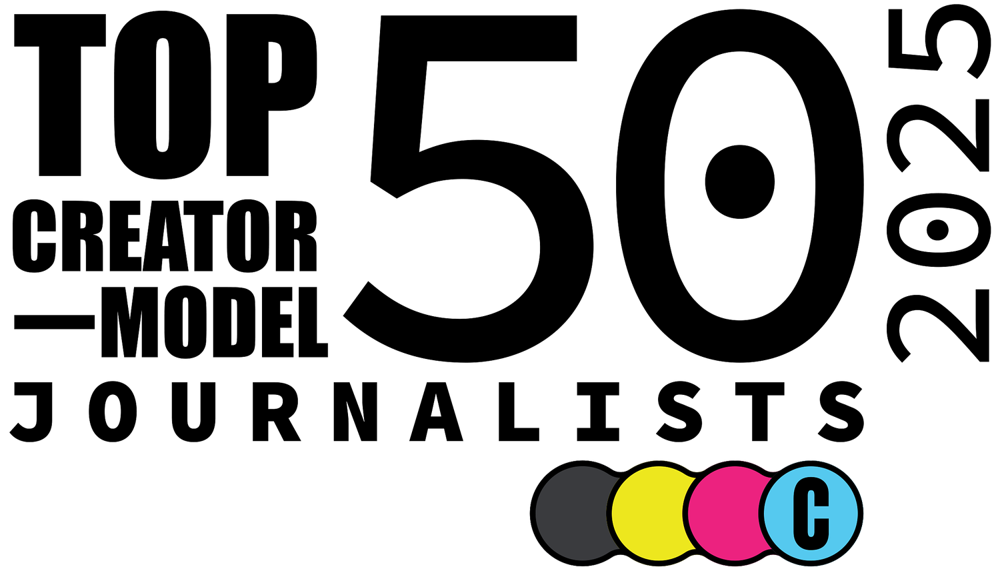
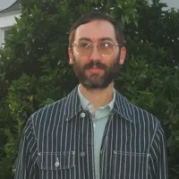
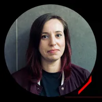

Meet the future of journalism.
These are the people redefining the role of the press. Not just with what they cover, but with how they reach and engage the public. Explore the full list and get to know the journalists driving this next chapter of the news.

2025 EditionCreator-model journalists
Sort by name or audience size, filter by beat, or search for a name or brand. Each brand links to where the journalist publishes.
| Beat | Primary platform | Also on |
|---|
Nobody on the list matches that. Try a different search or clear the filter.
Followers are the total on each journalist’s primary platform. “UV” means unique visitors.
The year this movement really started.
Fifteen of the 50 launched in 2020. Another 24 launched between 2021 and 2025. Only five predate 2019. We collected data from all 50 across a range of factors, and below is an anonymized look at the most interesting findings.
Mostly after 2020
The surge started in 2020, and most of the movement is post-2020. That shows just how recent and fast-growing this space is.
A wide range of income
We weren’t able to get income data for all 50, but the ones who answered the income question on our nominee survey gave us a sense of the range.
Reader revenue leads
Reader revenue dominates, mentioned in at least 15 entries. Other common models include ads, sponsorships, platform deals, events, books and freelancing or syndication. Hybrid models are common, which shows the power of diversification.
Newsletters dominate
YouTube is the leading video platform. Many on the list are poly-platform, showing up in several places and reaching slightly different audiences on each.
28 solo, 21 with a team
That split suggests a shift toward collaborative creator-led outlets as people scale.
8 of 50 post an ethics policy
This shows a need, and an opportunity, for more infrastructure around transparency and trust.
A list we want to grow
The Top 50 skewed slightly male (54%) and mostly white (86%), while 12% publicly identify as LGBTQIA+. We need your help to keep growing our insight into the wider world of journalism creators.
Original reporting first
This list is made up of journalists primarily reaching an English-speaking American audience with mostly original reporting, not just analysis or opinion. That’s why you won’t see content creators who front-end opinion in their work, even though many of them came up in the journalism industry.
Predictions from people who know
We’re going to see a lot more journalists go solo, especially in the context of increased authoritarianism and attacks on the press.
I’ll be curious to see if there’s gonna be some user pushback [on Substack’s app] because this is a space of readers and writers.

What we’re going to see next is more revenue bundling from solo journalists, with or without tech’s help.

The most sustainable businesses will be small teams splitting duties across the three core creator jobs (create, grow, sell) instead of true-solo creators.
We’ll see more legacy outlets acquiring successful indie operations, bringing these writers onboard to expand reach and revenue.
The already burgeoning creator economy will flourish in the next year or so as audiences seek out authentic voices and alternative news sources.
How we chose the 50
Finalists were selected through a multi-step process combining expert curation, industry nominations and direct input from the creators themselves. More than 125 finalists were evaluated.
Finalists were also asked to share business details, including revenue mix, staffing structure and ethics policies, to build a more complete picture of today’s independent journalism economy.
Read about the forces shaping the space
Credits
The Top 50 Creator-Model Journalists list is produced by Liz Kelly Nelson, Justin Bank, Ryan Kellett and Blair Hickman with support from Anna Loy. Press outreach by Kathy Baird. Logo design by James Bareham.
Special thanks to Lex Roman, Joy Mayer and Megan Finnerty for their insight, feedback and encouragement.
Questions or press requests: info@projectc.com
Hear about the next list first.
The Project C newsletter is where we publish our research on creator journalism, including the next edition of this list.
Subscribe to the newsletter →